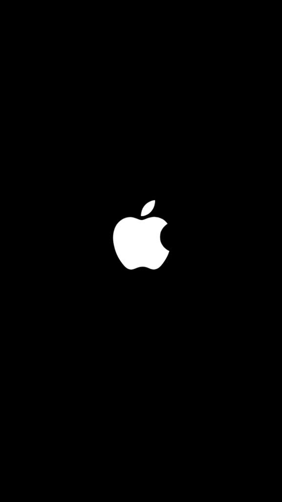
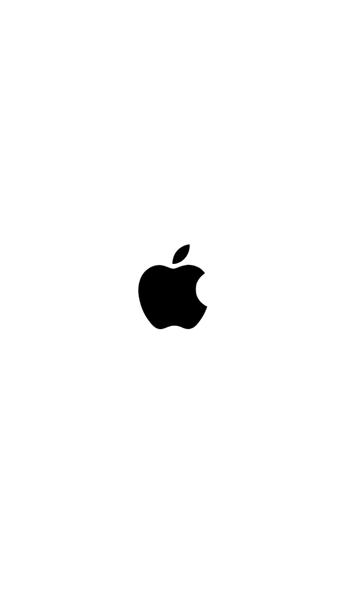

DClr_Override
Feb 10, 2015
And so, the low-level programming begins...
Update:
So I hear a lot of you have bricked your devices using this method. I am sorry. I put the hefty disclaimer here for a reason. The following devices work (if you enter the correct nvram variables exactly and triple check): iPhone 5, iPhone 5S, iPhone 6, iPhone 6 plus, iPad Mini 2, iPad Air, iPad Air 2. Other than that, I have no idea what other devices work with this. Devices that definately do not work are the iPhone 2G-4S, the iPhone 5C, and the iPad1-3. Not sure about the iPad 4 though, but do not try it. Comment which devices work for you, but DO NOT TEST IT. I would suggest steering clear of here if you do not see your device above, but hey, if you want to potentially ruin your device, go ahead.
Explanation of DClr
DClr is a variable inside of iBoot that determines what color the Apple logo should be on boot. It only exists on the iPhone 5 and up. It is composed of 32 hex characters, consisting of 16 bytes. DClr determines the color of the logo until SpringBoard begins to launch. Once SpringBoard launches, it uses a different method to determine device color, probably libMobileGestalt.dylib, which is responsible for determining disk usage, UDID, serial number, device version, and unfortunately for us, the real color. On the black (or space grey) iPhone, the default “black” logo is:  On the white, silver, or gold iPhone, the default “white” logo is: 
Here is a video of it in action:
Algorithm
A device determines the boot color using the algorithm: DClr_override is read from an nvram variable. If it is not present, than it attempts to read DClr from Syscfg. If DClr is not in Syscfg, it is read from ClrC.
ClrC
ClrC seems to only really matter on the iPhone 5. This is just because DClr is not readable from Syscfg on the iPhone 5, therefore it is the only thing telling iBoot what color to boot with. When reading ClrC from Syscfg, it will print out one of these strings:
ClrC: 00000000000000000000000000000000
ClrC: 01000000000000000000000000000000This basically translates to ClrC[0]: default black iPhone logo and ClrC[1]: default white iPhone logo.
How To Change the Logo
Disclaimer
I am not responsible for any damage that may happen to any devices because of this method. I have only tested this on iPhones and not any iPads. It does not work on any device below an iPhone 5. The top of this page has an update with device lists of what works and what doesn’t work. If you do not follow this guide exactly, you WILL permanently brick your device. No tether boot or restore, for that matter, will help you if you mess up. Good luck!
1. Jailbreak
A jailbreak is needed to edit nvram variables. Jailbreak and install OpenSSH or some other tool to access the command line (I highly suggest OpenSSH though, so you can easily copy and paste the following code from your computer). TRIPLE check all of the code you execute in this process. I cannot stress this enough.
2. Edit nvram
Acess the command line using the preferred method from above and copy and paste the following commands exactly. If you are using an black or space grey iPhone and want to get the “white” logo, execute
nvram DClr_override=00020000D8D9D700E3E4E10000000000If you are using a white, silver, or gold iPhone and want the “black” logo, execute
nvram DClr_override=000200009B9899003C3B3B0000000000Now, to test it, reboot!
Changing Back to Default
Since this is hardcoded into iBoot, an iTunes restore will not set it back to default. To reset it, you must still be jailbroken and be able to access the command line. Execute the command
nvram -d DClr_overrideReboot and it should be back to normal.
Conclusion
Messing with low-level components such as iBoot is very dangerous. If you were to mess up the above method iBoot, would refuse to load the DeviceTree. This will brick it permanently. The only thing your phone would be good for is either a paper weight or parts. And remember, this is just for educational and research purposes. If you think you are going to try this, it is probably not worth the risk.